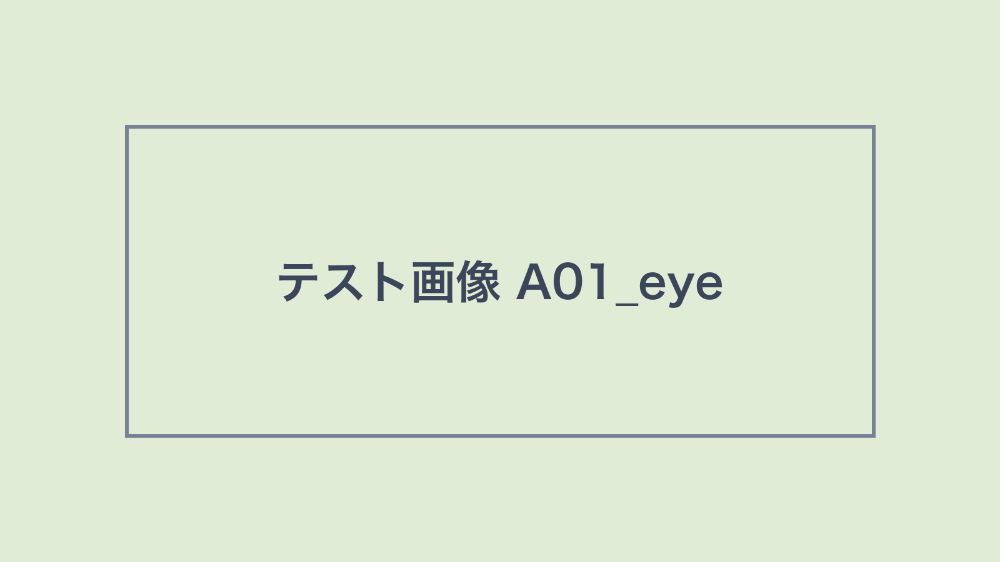
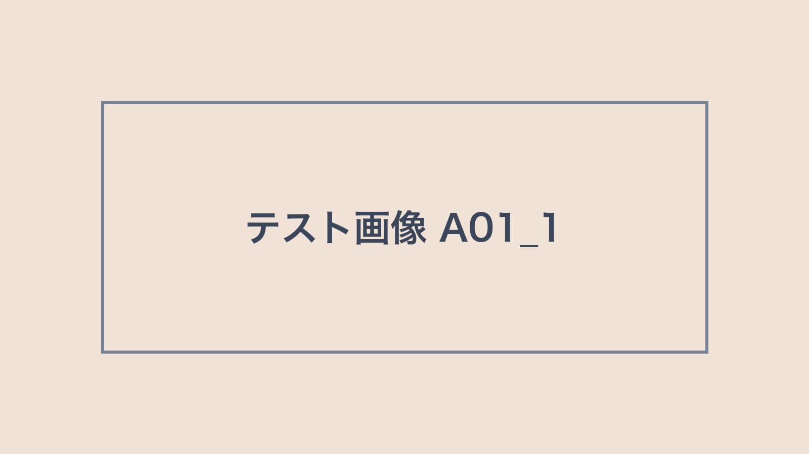
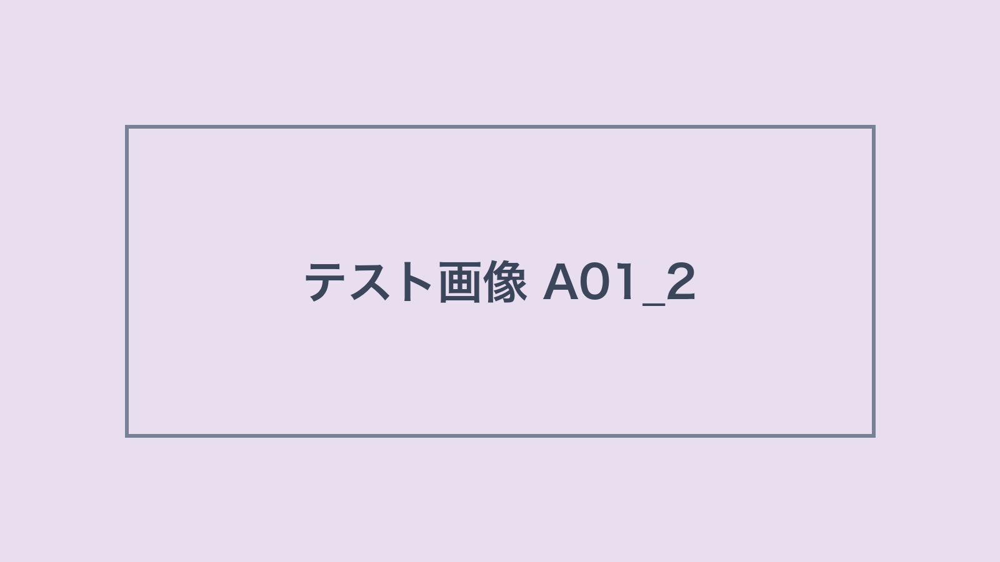

解説
介護
データ入力
介護のデータ入力、外注するなら
介護の現場で毎日たまる記録の入力。外に頼む前に決めておきたいことを、順番に紹介します。
この記事のポイント
- 手順が書き出せる仕事は頼みやすい
- 少しの量から試すと安心
- 個人の情報の扱いを先に決める
外注に向いている入力の仕事
紙の記録をパソコンに入れる仕事や、決まった形の表に数字を写す仕事は、手順を書き出しやすく、外に頼みやすい仕事です。どの書類を、どの形で、いつまでに入れるかを先に決めておくと、受ける側も迷わずに進められます。

頼む前に決めておくこと
入力する書類の種類と量、入力した後の確かめ方、やり取りの方法を決めておきます。個人の情報が入る書類は、渡し方と保管のルールを、依頼する前に話し合っておきます。

相談するときの流れ
まずは、今の作業の量と、困っていることを伝えます。そのうえで、少しの量から試しに頼み、やり方を合わせていくと、無理なく続けられます。
✓ まとめ
入力の仕事は、手順と決まりを先に整えると、外に頼みやすくなります。まずは少しの量から相談してみましょう。
外注について相談する →